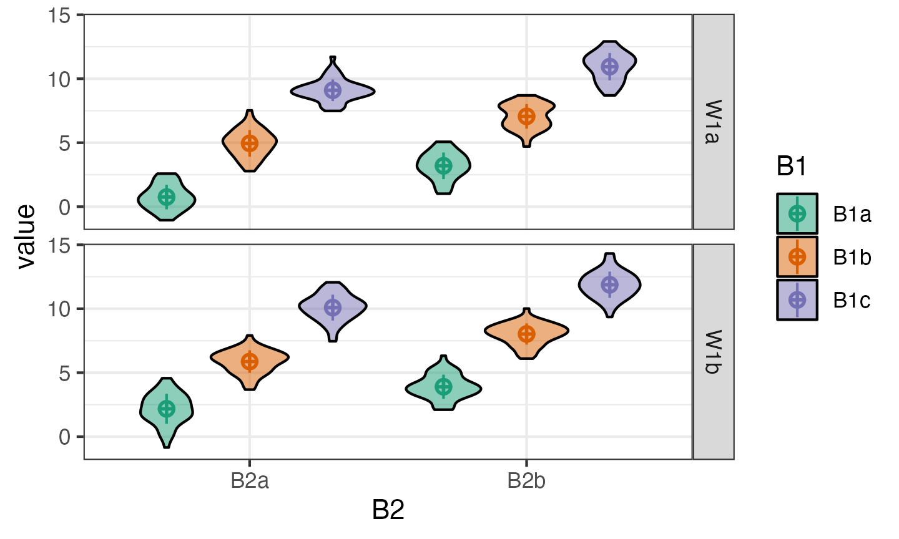

In this tutorial, we’ll learn how to simulate data for factorial designs using {faux}. There are more extensive examples at https://debruine.github.io/faux/.
Setup
We’ll be using 4 packages in this tutorial.
library(tidyverse) # for data wrangling
library(faux) # for simulation
library(broom) # for tidy analysis results
library(afex) # for ANOVA
set.seed(8675309) # Jenny, I've got your numberA seed makes randomness reproducible. Run the following code several times. Change the seed to your favourite integer. If the seed is the same, the random numbers after it will be the same, as long as the code is always executed in the same order.
Normal
Let’s start with a normal distribution using the base R function
rnorm(), which returns n values from a normal
distribution with a mean of 0 and a standard deviation of 1.
rnorm(n = 10)
## [1] -0.326233361 1.329799263 1.272429321 0.414641434 -1.539950042
## [6] -0.928567035 -0.294720447 -0.005767173 2.404653389 0.763593461You can change the mean and SD. Simulate a lot of values (1e5 ==
100,000) and visualise them with hist().
Multivariate normal
But how do you create correlated values? You can do this with
MASS::mvrnorm(), but you need to construct the
Sigma argument yourself from the correlation matrix and the
standard deviations of the populations, and then you need to turn the
resulting matrix into a data frame for many use cases. This isn’t very
difficult, but can be tedious with larger numbers of variables.
n = 1e5 # this is a large number to demonstrate that the result is as expected
mu = c(A = 1, B = 2, C = 3)
sd = c(0.5, 1, 1.5)
r = c(0, .25, .5)
cor_mat <- matrix(c(1, r[1], r[2],
r[1], 1, r[3],
r[2], r[3], 1),
nrow = 3)
Sigma <- (sd %*% t(sd)) * cor_mat
vars <- MASS::mvrnorm(n, mu, Sigma) |> as.data.frame()
cor(vars) |> round(2)
## A B C
## A 1.00 0.0 0.24
## B 0.00 1.0 0.50
## C 0.24 0.5 1.00rnorm_multi
In faux, you can create sets of correlated normally distributed
values using rnorm_multi().
dat3 <- rnorm_multi(
n = 50,
mu = c(A = 1, B = 2, C = 3),
sd = c(0.5, 1, 1.5),
r = c(0, .25, .5)
)The function get_params() gives you a quick way to see
the means, SDs and correlations in the simulated data set to make sure
you set the parameters correctly.
get_params(dat3)
## n var A B C mean sd
## 1 50 A 1.00 0.10 0.24 1.10 0.49
## 2 50 B 0.10 1.00 0.34 2.00 0.86
## 3 50 C 0.24 0.34 1.00 3.06 1.32If you set empirical to TRUE, the values
you set will be the sample parameters, not the
population parameters. This isn’t usually what you want
for a simulation, but can be useful to check you set the parameters
correctly.
dat3 <- rnorm_multi(
n = 50,
mu = c(A = 1, B = 2, C = 3),
sd = c(0.5, 1, 1.5),
r = c(0, .25, .5),
empirical = TRUE
)
get_params(dat3)
## n var A B C mean sd
## 1 50 A 1.00 0.0 0.25 1 0.5
## 2 50 B 0.00 1.0 0.50 2 1.0
## 3 50 C 0.25 0.5 1.00 3 1.5Shortcuts
There are a few shortcuts you can use. Run the following and see if you can guess how they work.
guess1 <- rnorm_multi(50,
mu = 1:3,
varnames = LETTERS[1:3],
empirical = TRUE)
get_params(guess1)
## n var A B C mean sd
## 1 50 A 1 0 0 1 1
## 2 50 B 0 1 0 2 1
## 3 50 C 0 0 1 3 1
guess2 <- rnorm_multi(50, vars = 4, r = 0.5, empirical = TRUE)
get_params(guess2)
## n var X1 X2 X3 X4 mean sd
## 1 50 X1 1.0 0.5 0.5 0.5 0 1
## 2 50 X2 0.5 1.0 0.5 0.5 0 1
## 3 50 X3 0.5 0.5 1.0 0.5 0 1
## 4 50 X4 0.5 0.5 0.5 1.0 0 1
# get correlation matrix, means and SDs for 4 variables from iris
iris_r <- cor(iris[1:4])
iris_mu <- colMeans(iris[1:4])
iris_sd <- var(iris[1:4]) |> diag() |> sqrt() # colSDs
guess3 <- rnorm_multi(50,
mu = iris_mu,
sd = iris_sd,
r = iris_r)
get_params(guess3)
## n var Sepal.Length Sepal.Width Petal.Length Petal.Width mean sd
## 1 50 Sepal.Length 1.00 -0.13 0.88 0.79 6.01 0.82
## 2 50 Sepal.Width -0.13 1.00 -0.39 -0.30 3.09 0.37
## 3 50 Petal.Length 0.88 -0.39 1.00 0.95 3.83 1.66
## 4 50 Petal.Width 0.79 -0.30 0.95 1.00 1.22 0.68Setting r
You can set the r argument for correlations in a few
different ways.
If all correlations have the same value, just set r equal to a single number.
# all correlations the same value
rho_same <- rnorm_multi(50, 4, r = .5, empirical = TRUE)
get_params(rho_same)
## n var X1 X2 X3 X4 mean sd
## 1 50 X1 1.0 0.5 0.5 0.5 0 1
## 2 50 X2 0.5 1.0 0.5 0.5 0 1
## 3 50 X3 0.5 0.5 1.0 0.5 0 1
## 4 50 X4 0.5 0.5 0.5 1.0 0 1You can set rho to a vector or matrix of the full correlation matrix.
This is convenient when you’re getting the values from an existing
dataset, where you can just use the output of the cor()
function.
# full correlation matrix
# X1 X2 X3 X4
rho <- c(1.0, 0.5, 0.4, 0.3, # X1
0.5, 1.0, 0.2, 0.1, # X2
0.4, 0.2, 1.0, 0.0, # X3
0.3, 0.1, 0.0, 1.0) # X4
rho_cormat <- rnorm_multi(50, 4, r = rho, empirical = TRUE)
get_params(rho_cormat)
## n var X1 X2 X3 X4 mean sd
## 1 50 X1 1.0 0.5 0.4 0.3 0 1
## 2 50 X2 0.5 1.0 0.2 0.1 0 1
## 3 50 X3 0.4 0.2 1.0 0.0 0 1
## 4 50 X4 0.3 0.1 0.0 1.0 0 1Alternatively, you can just specify the values from the upper right triangle of a correlation matrix. This is easier if you’re reading the values out of a paper.
# upper right triangle
# X2 X3 X4
rho <- c(0.5, 0.4, 0.3, # X1
0.2, 0.1, # X2
0.0) # X3
rho_urt <- rnorm_multi(50, 4, r = rho, empirical = TRUE)
get_params(rho_urt)
## n var X1 X2 X3 X4 mean sd
## 1 50 X1 1.0 0.5 0.4 0.3 0 1
## 2 50 X2 0.5 1.0 0.2 0.1 0 1
## 3 50 X3 0.4 0.2 1.0 0.0 0 1
## 4 50 X4 0.3 0.1 0.0 1.0 0 1Factorial Designs
You can use rnorm_multi() to simulate data for each
between-subjects cell of a factorial design and manually combine the
tables, but faux has a function that better maps onto how we usually
think and teach about factorial designs.
The default design is 100 observations of one variable (named
y) with a mean of 0 and SD of 1. Unless you set
plot = FALSE or run
faux_options(plot = FALSE), this function will show you a
plot of your design so you can check that it looks like you expect.
simdat1 <- sim_design()
Factors
Use lists to set the names and levels of within and
between subject factors.
pettime <- sim_design(
within = list(time = c("pre", "post")),
between = list(pet = c("cat", "dog", "ferret"))
)You can set mu and sd with unnamed vectors,
but getting the order right can take some trial and error.
pettime <- sim_design(
within = list(time = c("pre", "post")),
between = list(pet = c("cat", "dog", "ferret")),
mu = 1:6
)You can set values with a named vector for a single type of factor. The values do not have to be in the right order if they’re named.
pettime <- sim_design(
within = list(time = c("pre", "post")),
between = list(pet = c("cat", "dog", "ferret")),
mu = c(cat = 1, ferret = 5, dog = 3),
sd = c(pre = 1, post = 2)
)
Or use a data frame for within- and between-subject factors.
pettime <- sim_design(
within = list(time = c("pre", "post")),
between = list(pet = c("cat", "dog", "ferret")),
mu = data.frame(
pre = c(1, 3, 5),
post = c(2, 4, 6),
row.names = c("cat", "dog", "ferret")
)
)
If you have within-subject factors, set the correlations for each between-subject cell like this.
pettime <- sim_design(
within = list(time = c("pre", "post")),
between = list(pet = c("cat", "dog", "ferret")),
r = list(cat = 0.5,
dog = 0.25,
ferret = 0),
empirical = TRUE,
plot = FALSE
)
get_params(pettime)
## pet n var pre post mean sd
## 1 cat 100 pre 1.00 0.50 0 1
## 2 cat 100 post 0.50 1.00 0 1
## 3 dog 100 pre 1.00 0.25 0 1
## 4 dog 100 post 0.25 1.00 0 1
## 5 ferret 100 pre 1.00 0.00 0 1
## 6 ferret 100 post 0.00 1.00 0 1You can also change the name of the dv and
id columns and output the data in long format. If you do
this, you also need to tell get_params() what columns
contain the between- and within-subject factors, the dv, and the id.
dat_long <- sim_design(
within = list(time = c("pre", "post")),
between = list(pet = c("cat", "dog", "ferret")),
id = "subj_id",
dv = "score",
long = TRUE,
plot = FALSE
)
get_params(dat_long,
between = "pet",
within = "time",
id = "subj_id",
dv = "score",
digits = 3)
## pet n var pre post mean sd
## 1 cat 100 pre 1.000 -0.070 0.013 1.031
## 2 cat 100 post -0.070 1.000 0.009 0.918
## 3 dog 100 pre 1.000 0.133 0.095 0.994
## 4 dog 100 post 0.133 1.000 0.096 1.028
## 5 ferret 100 pre 1.000 -0.001 0.060 1.030
## 6 ferret 100 post -0.001 1.000 0.018 1.054The current version of faux doesn’t actually need
between or dv and later versions won’t need
within or id if a data frame was created with
faux.
Anonymous Factors
If you need to make a quick demo, you can set factors anonymously with integer vectors. For example, the following code makes 3B*2B*2W mixed design.
dat_anon <- sim_design(
n = 50,
between = c(3, 2),
within = 2,
mu = 1:12
)Faux has a quick plotting function for visualising data made with
faux. The plot created by sim_design() shows the
design, while this function shows the simulated
data.
plot(dat_anon)You can change the order of plotting and the types of geoms plotted. This takes a little trial and error, so this function will probably be refined in later versions.

Replications
You often want to simulate data repeatedly to do things like
calculate power. The sim_design() function has a lot of
overhead for checking if a design makes sense and if the correlation
matrix is possible, so you can speed up the creation of multiple
datasets with the same design using the rep argument. This
will give you a nested data frame with each dataset in the
data column.
dat_rep <- sim_design(
within = 2,
n = 20,
mu = c(0, 0.25),
rep = 5,
plot = FALSE
)Analyse each replicate
You can run analyses on the nested data by wrapping your analysis
code in a function then using map() to run the analysis on
each data set and unnest() to expand the results into a
data table.
# define function
analyse <- function(data) {
t.test(data$W1a, data$W1b, paired = TRUE) %>% broom::tidy()
}
# get one test data set
data <- dat_rep$data[[1]]
# check function returns what you want
analyse(data)
## # A tibble: 1 × 8
## estimate statistic p.value parameter conf.low conf.high method alternative
## <dbl> <dbl> <dbl> <dbl> <dbl> <dbl> <chr> <chr>
## 1 0.0926 0.305 0.763 19 -0.542 0.727 Paired t-… two.sided
# run the function on each data set
dat_rep |>
mutate(analysis = map(data, analyse)) |>
select(-data) |>
unnest(analysis)
## # A tibble: 5 × 9
## rep estimate statistic p.value parameter conf.low conf.high method
## <int> <dbl> <dbl> <dbl> <dbl> <dbl> <dbl> <chr>
## 1 1 0.0926 0.305 0.763 19 -0.542 0.727 Paired t-test
## 2 2 0.269 0.717 0.482 19 -0.517 1.05 Paired t-test
## 3 3 -0.338 -1.06 0.303 19 -1.01 0.330 Paired t-test
## 4 4 -0.473 -1.83 0.0823 19 -1.01 0.0668 Paired t-test
## 5 5 -0.519 -1.49 0.153 19 -1.25 0.210 Paired t-test
## # … with 1 more variable: alternative <chr>ANOVA
Use the same pattern to run an ANOVA on a version of the
pettime dataset.
First, simulate 100 datasets in long format. These data will have small main effects of pet and time, but no interaction.
pettime100 <- sim_design(
within = list(time = c("pre", "post")),
between = list(pet = c("cat", "dog")),
n = c(cat = 50, dog = 40),
mu = data.frame(
pre = c(1, 1.2),
post = c(1.2, 1.4),
row.names = c("cat", "dog")
),
sd = 1,
id = "pet_id",
dv = "score",
r = 0.5,
long = TRUE,
rep = 100
)Then set up your analysis. We’ll use the aov_ez()
function from the {afex} package because its arguments match those of
sim_design().
afex::set_sum_contrasts() # avoids annoying afex message
## setting contr.sum globally: options(contrasts=c('contr.sum', 'contr.poly'))
afex_options(include_aov = FALSE) # runs faster
afex_options(es_aov = "pes") # changes effect size measure to partial eta squared
analyse <- function(data) {
a <- afex::aov_ez(
id = "pet_id",
dv = "score",
between = "pet",
within = "time",
data = data
)
# return anova_table for GG-corrected DF
as_tibble(a$anova_table, rownames = "term") |>
mutate(term = factor(term, levels = term)) |> # keeps terms in order
rename(p.value = `Pr(>F)`) # fixes annoying p.value name
}Test the analysis code.
data <- pettime100$data[[1]]
analyse(data)
## # A tibble: 3 × 7
## term `num Df` `den Df` MSE F pes p.value
## <fct> <dbl> <dbl> <dbl> <dbl> <dbl> <dbl>
## 1 pet 1 88 1.87 0.859 0.00967 0.357
## 2 time 1 88 0.507 1.66 0.0185 0.201
## 3 pet:time 1 88 0.507 0.104 0.00119 0.747Make a table of the results of each analysis:
pettime_sim <- pettime100 |>
mutate(analysis = map(data, analyse)) |>
select(-data) |>
unnest(analysis)## # A tibble: 6 × 8
## rep term `num Df` `den Df` MSE F pes p.value
## <int> <fct> <dbl> <dbl> <dbl> <dbl> <dbl> <dbl>
## 1 1 pet 1 88 1.87 0.859 0.01 0.357
## 2 1 time 1 88 0.507 1.66 0.019 0.201
## 3 1 pet:time 1 88 0.507 0.104 0.001 0.747
## 4 2 pet 1 88 1.53 0.895 0.01 0.347
## 5 2 time 1 88 0.455 0.567 0.006 0.453
## 6 2 pet:time 1 88 0.455 2.91 0.032 0.091Then you can summarise the data to calculate things like power for each effect or mean effect size.
pettime_sim |>
group_by(term) |>
summarise(power = mean(p.value < 0.05),
mean_pes = mean(pes),
.groups = "drop")
## # A tibble: 3 × 3
## term power mean_pes
## <fct> <dbl> <dbl>
## 1 pet 0.21 0.0236
## 2 time 0.51 0.0530
## 3 pet:time 0.02 0.0105The power for the between-subjects effect of pet is smaller than for the within-subjects effect of time. What happens if you reduce the correlation between pre and post?
Exercises
Multivariate normal
Sample 40 values of three variables named J,
K and L from a population with means of 10, 20
and 30, and SDs of 5. J and K are correlated
0.5, J and L are correlated 0.25, and
K and L are not correlated.
From existing data
Using the data from the built-in dataset attitude,
simulate a new set of 20 observations drawn from a population with the
same means, SDs and correlations for each column as the original
data.
2b
Create a dataset with a between-subject factor of “pet” having two levels, “cat”, and “dog”. The DV is “happiness” score. There are 20 cat-owners with a mean happiness score of 10 (SD = 3) and there are 30 dog-owners with a mean happiness score of 11 (SD = 3).
3w
Create a dataset of 20 observations with 1 within-subject variable (“condition”) having 3 levels (“A”, “B”, “C”) with means of 10, 20 and 30 and SD of 5. The correlations between each level have r = 0.4. The dataset should look like this:
| id | condition | score |
|---|---|---|
| S01 | A | 9.17 |
| … | … | … |
| S20 | A | 11.57 |
| S01 | B | 18.44 |
| … | … | … |
| S20 | B | 20.04 |
| S01 | C | 35.11 |
| … | … | … |
| S20 | C | 29.16 |
2w*2w
Create a dataset with 50 observations of 2 within-subject variables (“W1” and “W2”) each having 2 levels. The mean for all cells is 10 and the SD is 2. The dataset should have 20 subjects. The correlations look like this:
| W1a_W2a | W1a_W2b | W1b_W2a | W1b_W2b | |
|---|---|---|---|---|
| W1a_W2a | 1.0 | 0.5 | 0.5 | 0.2 |
| W1a_W2b | 0.5 | 1.0 | 0.2 | 0.5 |
| W1b_W2a | 0.5 | 0.2 | 1.0 | 0.5 |
| W1b_W2b | 0.2 | 0.5 | 0.5 | 1.0 |
2w*3b
Create a dataset with a between-subject factor of “pet” having 3 levels (“cat”, “dog”, and “ferret”) and a within-subject factor of “time” having 2 levels (“pre” and “post”). The N in each group should be 10. Means are:
- cats: pre = 10, post = 12
- dogs: pre = 14, post = 16
- ferrets: pre = 18, post = 20
SDs are all 5 and within-cell correlations are all 0.25.
Replications
Create 5 datasets with a 2b*2b design, 30 participants in each cell. Each cell’s mean should be 0, except B1a:B2a, which should be 0.5. The SD should be 1. Make the resulting data in long format.
Power
Simulate 100 datasets like the one above and use lm() or
afex::aov_ez() to look at the interaction between A and B.
What is the power of this design?